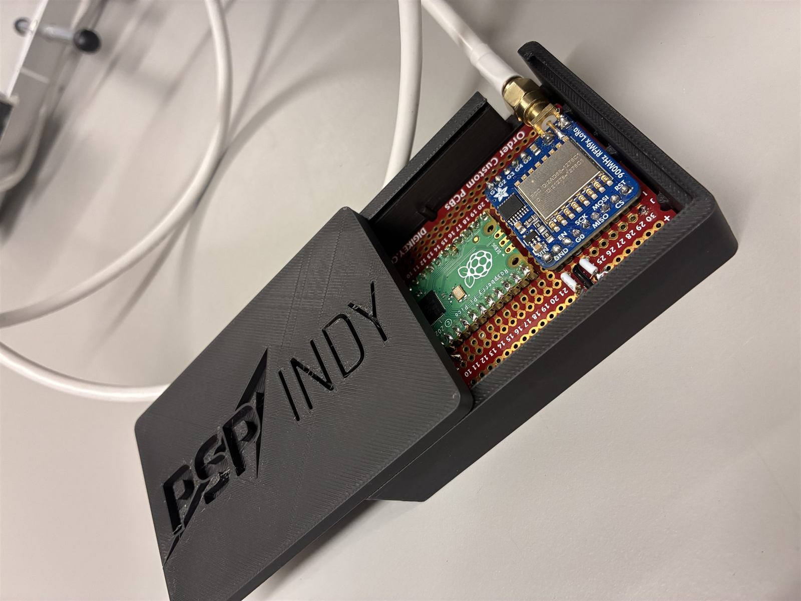
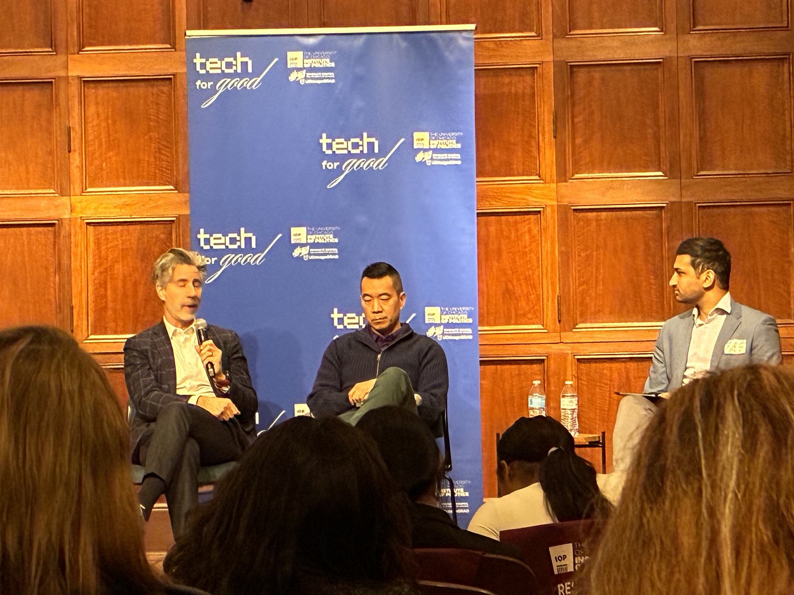
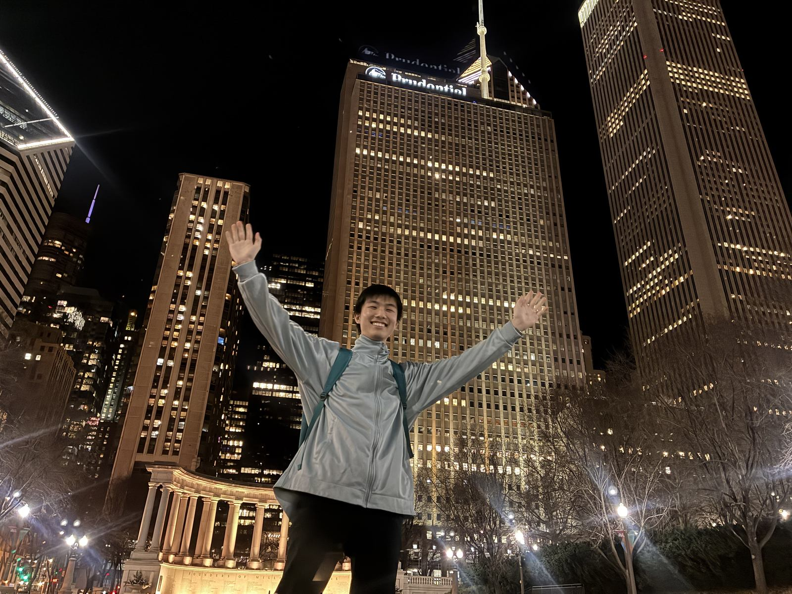
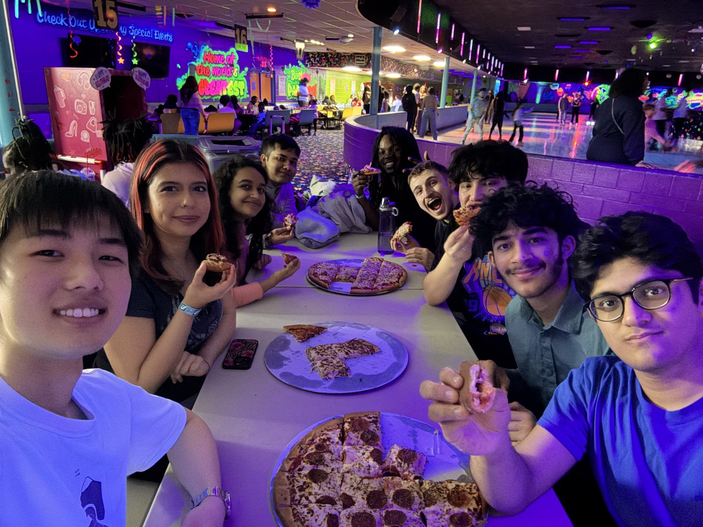
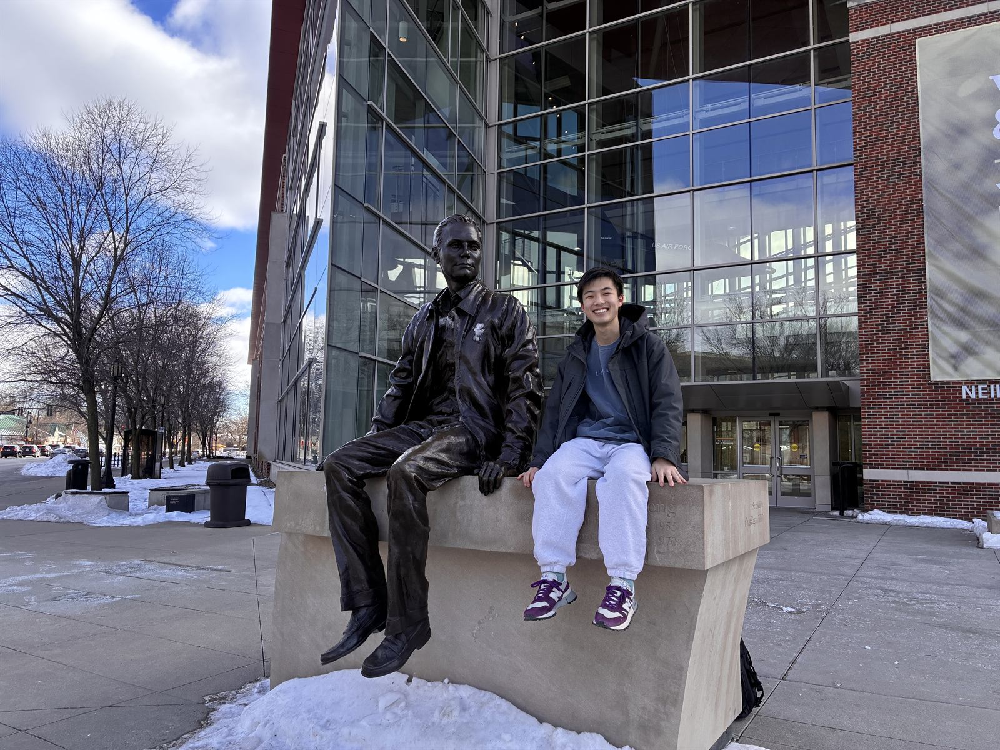

Computer engineering, Purdue University in Indianapolis
Ichiro Okochi
I build things that sit between hardware and software: a speech translator for 23 languages, a webcam controller for CAD, and electronics for a student rocket.
Selected work
Open any project for the details. Hover for a preview.
-
A translation app for text and speech across 23 languages, focused on Indian languages that mainstream apps handle poorly. Built with EPICS at Purdue and KL University.
- Led full-stack development, connecting an Expo React Native app to a FastAPI and PyTorch backend.
- Integrated IndicTrans2, Whisper Large V3 Turbo, IndicWav2Vec and gTTS, with fallbacks, health checks, runtime metrics and on-demand speech generation.
- Grew the benchmark to 230 multilingual test cases and charted latency and success rates, which guided UI and reliability fixes.
- Python
- PyTorch
- FastAPI
- Expo React Native
- Whisper
- IndicTrans2
- Voice in23 languages
- Speech to textWhisper, IndicWav2Vec
- TranslateIndicTrans2
- Text to speechgTTS
- Voice outlistener's language
Each stage falls back cleanly if a model is slow or down. -
Control Onshape, or any 3D viewer in the browser, with your bare hands and a normal webcam. No extra hardware.
- Tracks hand landmarks with MediaPipe and maps each gesture to a mouse or keyboard action.
- Pinch to zoom, open hand to rotate, middle-finger pinch to pan, ring pinch to fit the view.
- A closed palm is a neutral state, so the model only moves when you mean it to.
- Python
- MediaPipe
- pynput
- Onshape
Gesture map Index finger Move cursor Index pinch Zoom Open hand Rotate view Middle pinch Pan view Ring pinch Fit and reset Closed palm Idle -
A printed case for a Raspberry Pi Pico and a 900 MHz LoRa radio, made for the Purdue Space Program payload pod.
- Measured the boards by hand and worked out tolerances from their specs.
- Modeled the housing in Siemens NX and printed it in PLA.
- Siemens NX
- Raspberry Pi Pico
- LoRa
- 3D printing

-
A VS Code extension I wrote so my CS 159 C assignments match the style the Vocareum grader expects.
- Replaces tabs with two spaces everywhere except inside string and character literals, so program output never changes.
- Collapses repeated blank lines and sets two-space indentation for C and header files.
- TypeScript
- VS Code API
- if (x > 0) { - printf("\t%d\n", x); + if (x > 0) { + printf("\t%d\n", x); }
The tab inside the string stays a tab. -
Andy Sloane's famous spinning ASCII donut, with the C source itself rearranged into the shape of a donut. A tribute remix: the math is his, the shape is mine.
- The donut on the right is running live in your browser, using the same torus math.
- C
- JavaScript
Experience
Engineering on one side, the clubs I help run on the other.
Engineering
-
Feb to Oct 2026
Avionics team member, payload pod
Purdue Space Program
Worked on payload pod electronics, from soldering boards to designing the printed LoRa enclosure in Siemens NX.
-
Jan to May 2026
Design lead
EPICS at Purdue
Led full-stack development of Vaani Connect: an Expo app, a FastAPI and PyTorch backend, four speech and translation models, and a 230-case benchmark.
-
Aug to Dec 2025
Project liaison
Indian Institute of Technology, Delhi
Connected Purdue and IIT Delhi teams designing a low-cost Bhilawa seed decorticator for rural communities. Ran weekly meetings, relayed faculty feedback, and researched materials and safety requirements.
-
Now Since Mar 2026
Member
Electrical and Computer Engineering Student Society
Leadership
-
Now Since Sep 2026
Treasurer
Amplify Purdue
Run the finances for a student entrepreneurship club. I write grant applications for our 2027 case competitions and a campus pitch competition, build event budgets, and set up reimbursement tracking that meets Purdue's student organization rules.
-
Now Since Sep 2026
External affairs manager
Sustainable Energy Club at Indy
Building a coalition of clean-energy student groups across Indiana, and working with club leadership on a possible student-led clean energy design challenge.
-
Now Since Sep 2026
Secretary
Japanese Student Association
Keep board minutes and action items, help run cultural events, and work with Japanese student groups at other universities.
-
Now Since Feb 2026
General member
Purdue Student Union Board
Plan and run large campus events, pitch new event ideas, and work the floor on event nights.
Toolkit
What I've actually shipped with.
- Languages
- Python, C, TypeScript, JavaScript
- AI and backend
- PyTorch, FastAPI, Whisper, IndicTrans2, Hugging Face, MediaPipe
- Apps and tools
- Expo React Native, VS Code extensions, Git and GitHub, PowerShell, WSL
- Hardware
- Soldering, Siemens NX, PCB design, Raspberry Pi Pico, LoRa, 3D printing
- Running things
- Budgets and financial reporting, grant writing, partnership outreach, meeting minutes, event planning
- Spoken
- Japanese and English
About
I'm a computer engineering student at Purdue in Indianapolis, class of 2029.
I like projects where code has to deal with the real world: noisy audio in a language a model has barely seen, a hand that doesn't hold still in front of a webcam, a board that has to fit in a case I printed myself.
Outside of class I'm usually running something: budgets for Amplify, outreach for the Sustainable Energy Club, events for the Japanese Student Association and the Student Union Board.
- Studying
- B.S. Computer Engineering, 2025 to 2029
- Based in
- Indianapolis, Indiana
- Local time
- Indianapolis

Tech for Good, Chicago
Chicago at night
Student Union Board
With Neil Armstrong
Say hello
Internships, research, a club collaboration, or a project you want a second pair of hands on.